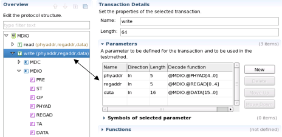
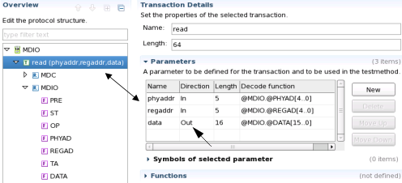

Example: Writing a protocol based UTM using protocol wrapper
This example shows how to implement protocol based tests to UTM using a protocol wrapper.
Initial details
Device & Protocol details
It is presumed that the setup has been done as detailed in Example: Defining a MDIO protocol.
UTM details
An UTM project MDIO_DEV_tml has been created as described in How to create a universal test method project.
An UTM Class MDIO_SingleWriteWrapper has been created as described in How to create a universal test method class, without entering parameters or limits in the wizard.
Wrapper details
Custom wrapper classes CustomMDIOWrapper had been build as described in Generating protocol wrappers.
Result proxy and vector classes have also been created including all available methods.
All wrapper files *.hpp and *.cpp have been
created in (or copied to) the UTM project MDIO_DEV_tml .
Entering protocol based wrapper code to the UTM template
- Open the UTM class MDIO_SingleWriteWrapper for editing.
- Add CustomMDIOWrapper.hpp to the include section of the class.
- Create a protocol based test object MDIOSingleWriteTestWrapper using the
custom wrapper class CustomMDIOWrapper_SYNC_TEST.
Pass the following parameters to the object:
MDIOSingleWriteTestWrapper Parameter
Description
poMD
Mandatory. Protocol's port name.
MPB_NonProtPort
Multiport bust label that deals with all non protocol ports/pins.
Optional. If omitted the current sequencer start label is used.
wt1
Wavetable to be used for protocol pattern generation.
Optional. If omitted the current primary setting is used.
SingleWriteTransactionLabelWrapper
Identifier of the synchronized protocol test label.
Optional. If not provided, it will be assembled using the name of the current test suite, the multiport burst label and the poMD.
This is the corresponding code line:
Add the write transaction to the MDIOSingleWriteTestWrapper object.CustomMDIOWrapper_SYNC_TEST MDIOSingleWriteTestWrapper("poMD", "MPB_NonProtPort", "wt1", "SingleWriteTransactionLabelWrapper");Use the parameters of the protocol's definition and pass in fixed values.

Add write transaction to MDIOSingleWriteTestWrapper Parameter
Value
phyaddr
hex 17
regaddr
bin 11
data
hex 3FFF
This is the corresponding code line:
MDIOSingleWriteTestWrapper.write("0x17","0b11","0x3FFF");Note The order of the parameters has to match the order given in the protocol's definition! - Complete the protocol based test definition using
MDIOSingleWriteTestWrapper.run().This function does two things:
- It determines if the protocol label exists already. If it does not, a new label will be created. In this case the label Prot:MDIO:SingleWriteTransactionLabelWrapper will be generated (respectively reused). In both cases it also links the protocol with the multiport bust label. For details on viewing protocol labels, see Protocol pattern specifics of the Pattern Editor.
- In addition it performs a functional test.
- Unlink the labels using
MDIOSingleWriteTestWrapper.unlink();Unlinking the labels allows the multiport bust label to be used with other transactions. This prevents port conflicts with existing transactions if adding additional.
Excursus - adding a read transaction
Adding a read transaction to the UTM code basically follows the sequence outlined above. Only the differences are outlined in this section.
The parameters of the read transaction are usually the same as those of the write transaction.

However, parameters of read transaction can also be bidirectional as shown above. Here phyaddr and regaddr are used as inputs to read the corresponding data from the DUT.
When using custom wrapper APIs you have to create either one or both result proxy and vector classes as described in Generating protocol wrappers.
In order to deal with results you have to declare result proxy and/or vector identifiers in the protected section of your class:
TRANSACTION_RESULT_PROXY <ResultProxyID1>, <ResultProxyID2>,...;PROTOCOL_TEST_RESULT_VECTOR <ResultVectorID>;
A read transaction then can be added to protocol based test object (MDIOReadTestWrapper) using the result proxy like this:
ResProxyReadPhy17Reg3 = MDIOReadTestWrapper.read(0x17,
0x03);
Alternatively, if using the result vector the coding may look like this:
ResVecAllResults = MDIOReadTestWrapper.getResults();
However, none of these functions will execute a test and thus not retrieve any data. They just tell the transaction that the parameter data will receive data when executed and where/how to access the results.
For retrieving data one has to use the .run() function once all transactions have been set up.
These are the main differences between write and read transactions from a UTM perspective.
From here on you may handle the results similar to other results received from the DUT.
Example
Description
This class, together with the example device setup detailed in Example: Defining a MDIO protocol, can be copied to your UTM class and used as a reference to the previous description.
#include "testmethod.hpp"
#include "CustomMDIOWrapper.hpp"
#include "mapi.hpp"
using namespace std;
class MDIO_SingleWriteWrapper: public testmethod::TestMethod {
protected:
virtual void initialize()
{
//Add your initialization code here
}
virtual void run()
{
ON_FIRST_INVOCATION_BEGIN();
cout << "======= MDIO_Single_WriteWrapper ================" << endl;
cout << " This test does a single write transction using custom wrapper" << endl;
cout << " Verify the created protocol pattern" << endl;
cout << " Pattern label is Prot:MDIO:SingleWriteTransactionLabelWrapper" << endl;
cout << " Check vectors 36-40 for phyadd 17 in hex" << endl;
cout << " Check vectors 41-45 for regadd 11 in bin" << endl;
cout << " Check vectors 48-63 for data 3FFF in hex" << endl;
cout << " Compare with MDIO write transaction in Protocol setup " << endl;
cout << endl;
Primary.label("MPB_NonProtPort");
CustomMDIOWrapper_SYNC_TEST MDIOSingleWriteTestWrapper("poMD", "MPB_NonProtPort", "wt1", "SingleWriteTransactionLabelWrapper");
MDIOSingleWriteTestWrapper.write("0x17","0b11","0x3FFF");
if (!MDIOSingleWriteTestWrapper.run()) {
cerr << ".run() error \n";
ERROR_EXIT(TM::ABORT_FLOW);
}
MDIOSingleWriteTestWrapper.unlink();
ON_FIRST_INVOCATION_END();
return;
}
virtual void postParameterChange(const string& parameterIdentifier)
{
//Add your code
return;
}
virtual const string getComment() const
{
string comment = " please add your comment for this method.";
return comment;
}
};
REGISTER_TESTMETHOD("MDIO_SingleWriteWrapper", MDIO_SingleWriteWrapper);Functional changes
- Introduced in SmarTest 7.1.2